Tradeoff Analysis: The Web Application
David R. Smith, US Geological Survey, Leetown Science Center
Mitchell Eaton, US Geological Survey, Southeast Climate Science Center
Jonathan Katz
February 22, 2018
Introduction
Tradeoff analysis is the process of evaluating which of several potential courses of action offers the the best possible outcome, and in the process of this evaluation it can also offer insight into where deficiencies exist – or what must be done to increase the final return. Tradeoff analysis is typically performed before any action is taken, and it therefore depends on predictions of how a given action will affect one or more objectives. Accurate predictions are therefore a foundation of quantitative decision analysis, and among the goals of tradeoff analysis is to base a decision on the best information available. In some cases, quantitative models can predict consequences with known accuracy. In cases where models have not been developed predictions may be generated through expert elicitation. For complex decisions with many objectives, it is likely that models will exist for some objectives but not others, and expert opinion will be used where modeled effects are unavailable.
Tradeoff analysis can be framed as a multiple-criteria decision analysis; to do so, it is first necessary to list all realistic courses of action (here we refer to them as policies, or alternatives) as well as all relevant objectives that must be satisfied to some extent by all actions. To evaluate the effect of each policy on each objective, two attributes are outlined a priori: a method for quantifying the extent that each action satisfies each objective, and a scale for specifying the desired quantity. To facilitate comparison of evaluations of each objective it is common to normalize the scale in some way, often by transforming it to a 0 to 1 scale in which 1 represents the most desirable outcome. It is also common to incorporate a weighting scheme that allows different stakeholders to emphasize the objectives viewed as most important, while marginalizing those viewed as less important.
This application is designed to facilitate tradeoff analyses by performing the comparative scoring automatically and presenting the results in a flexible and informative manner. This is just a fraction of the work that goes into a proper tradeoff analysis, but it may be one of the more confusing parts of the process.
Users of the app will still need to outline their alternative policies, list all relevant objectives, identify how each objective will be scored and what scores will represent success before opening the app. Here we describe how to format inputs to the app, how to manipulate the subjective components, and how interpret the output. For illustrative purposes we use as an example a decision to return natural tidal flow to the 1,100 acre Herring River estuary in the towns of Wellfleet and Truro, Massachusetts. The Herring River estuary has been isolated from the natural tides from Wellfleet Harbor since 1908 by several dams and dikes placed to expand agricultural land and provide a substrate for local roads. The Cape Cod National Seashore and Herring River Restoration Committee propose to restore tidal exchange and natural communities to the ecologically degraded system by opening gates in dikes and converting dams with roads over them to bridges. A remaining factor to decide is the rate at which flow will be restored, which acknowledges a variable effect of increased tidal action on the multiple stakeholders.
Stakeholders identified include adjacent landowners as well as local, state, and federal government. Adjacent landowners include many private residences and several local businesses that rely on terrestrial and aquatic resources. Government stakeholders include the towns of Wellfleet and Truro, the Massachussets Department of Fish and Game, the National Park Service, the United States Geological Survey, and the United States Fish and Wildlife Service. A decision framework has been agreed upon to help decision makers and stakeholders characterize risk tolerances and community values, and formally evaluate trade-offs among competing objectives (e.g. restoring hydrography and ecological function while avoiding adverse impacts and minimizing cost). The outcomes of different management strategies will be predicted by a combination of numerical ecological models and expert knowledge where needed. The decision-making process is far from complete, so the information provided here is presented only for want of an example and is not intended to be accurate for the project it portrays.
Workflow
The following flowchart traces evaluation from uploaded parameter files (rounded rectangles) and prediction files (rectangles) to a cumulative utility value per policy and weighting scheme. The process begins when parameter and the prediction files are uploaded. Default column names of the attribute table are noted, and the arrows indicate the fate of each column’s contents. The structure of the policy table is much more flexible: the cumulative utility is informed by the contents of the table and also the column names and the row count; labels to the right of each arrow indicate the fate of each component.
After the parameter and the prediction files are uploaded there is one user-mediated process (circles) for which default values are not supplied: the prediction source selector. There are also five user-mediated processes for which default values are supplied: the group editor, the utility editor, the uncertainty editor, the value weighting editor, and the discount editor. Because it has no default value the prediction source selector must be viewed the app to advance. It is possible, although not recommended, to skip all other user-mediated processes and advance directly to the graphical or tabular output.
The group editor is used to collapse subobjectives under a single heading. This is useful with spatially implicit subobjectives, which may be collapsed under a single objective heading to more easily digest the resulting scores. The default behavior is to collapse all subobjectives under a single objective wherever possible. The utility editor allows the utility function for each subobjective to be parameterized within the app. The two parameters of the utility function include the risk attitude (e.g. “riskSeeking” vs “riskAdverse”) and goal (minimize vs maximize measured values). The default values for these parameters are set in the attribute table using the columns “Utility” and “Direction”.
There are two points at which the user may inspect values without altering the cumulative utility: the prediction and utility previews. In the prediction preview the predictions for all subobjectives is displayed as a panel of line plots using the native measurement scale over time. In the utility preview the annual utility are displayed as a panel of line plots using the utility scale (0 to 1) over time.
There are five points at which values are transformed (ovals). First, expert elicited four-point predictions are immediately converted to a continuous distribution on upload. Second, these expert predictions, and some model predictions, are interpolated to fill in temporal gaps. Third, all predictions are converted to utilities, a process that maps the predicted value to a uniform scale based on default values for risk attitude and direction defined in the attribute table. Fourth, the utilities are value weighted (default valuation is equal-weighting by objective), and lastly the weighted utilities are discounted (default discount factor is 1).
The cumulative utility is the time-aggregated weighted, discounted utility for each weighting scheme and policy combination.
User Interface
Overview
There are infinite ways to work through the app. At a minimum you must upload the policy and attribute tables and at least one prediction table and then view the prediction sources before moving to the outputs. A more considered approach includes reviewing the utility preferences (in Options > Adjust Utilities), setting or reviewing the weights (in Options > Weight Objectives). A handful of possible routes through the app are diagrammed below.
Distribution Format
The app is distributed as a Windows executable. Once installed, the app opens in the computer’s default web browser. The app was developed in Firefox (version 58.0.1) but has passed testing in Internet Explorer (version XXX) and Safari (version XXX). The server that does all dynamic UI generation, data manipulation, analysis, and plot generation runs R portable (version 3.4.2) through the Shiny package (version 1.0.5). The user interface consists of a navigation menu embedded in a collapsible sidebar on the left, and a main page body containing interactive forms, tables, and plots. The sidebar and forms are designed to be viewed on screen size of 1366x768 or higher; smaller screens and mobile devices may clip content without warning. On smaller screens it may be possible to adjust the browser zoom level to see all content (typically “Control -” to zoom out and “Control Shift +” to zoom in).
Server Disconnection (gray screen)
It is intended that users progress through the navigation menu from top-to-bottom, uploading files in the same order they are presented on-screen. At the bottom of each form “forward” and “back” navigation buttons facilitate orderly progression through the app. Once the tables have been uploaded most parameters can be adjusted in any order to allow the user to explore any number of “what-if” scenarios without resetting the app. Some combinations of adjustments may cause disconnection from the server, which disables all forms and turns the screen gray. In these cases it is necessary to refresh your browser and re-upload all tables. If the user encounters persistent server disconnections, a bug report to the developers may be sent from within the app using the menu at the top-right of the screen.
Privacy
The app operates by parsing tables uploaded by the user, manipulating and merging their contents, and presenting the results in tabular and graphical formats. User content must therefore be uploaded to the app using the on-screen widgets, however, because the app is run through an assigned localhost server the file contents never leave the user’s computer and there is no chance they may be intercepted between the web forms and the localhost server. No data are stored on the server beyond the session duration and no information about the user, the user’s web browser, or the user’s operating system are collected by the app. When the user closes the browser (or the host browser tab) all traces of the user’s session are removed from the server and can not be retrieved.
There is an option for the user to download a snapshot of their session as a .RDS file and restore the session in the future by uploading the file. RDS files are data-serialization files for the R computer language and these files may be opened and their contents inspected in R, although it is recommended that if users open this file they do not save changes as doing so may corrupt the ability to restore the analysis at a later date. The RDS file contains all data uploaded by the user and if privacy is a concern they access to them should be controlled as if they were the original files.
Parameterization
This application is parameterized via a series of tables uploaded as comma-separated values (csv) files. There are as many as four types of tables, and each is saved to a separate csv file. The table types include a single policy table, a single attribute table, any number of expert prediction tables, and any number of model prediction tables. The contents of each table should match the following examples as closely as possible, including adhering to case-sensitive column headings where indicated (Table 1).
| Type | Required | Expected Column Names |
|---|---|---|
| Policy | Yes | Column names refer to policies |
| Attribute | Yes | Default values preferred (see text) |
| Elicitation Predictions | No* | Objective, Low, High, MostLikely, Confidence, Policy, Time |
| Model Predictions (lookup) | No* | Must match subobjective names (see text) |
| Model Predictions (interpolated) | No* | Objective, Estimate, Confidence, Policy, Time |
*A minimum of one of these three prediction types must be supplied.
The Policy Table
Policies, or alternative actions being considered, specify the actions for one or more time periods into the future. The table structure thus has distinct policies in columns and time in rows. For each policy and time an action is coded into the table using any key-value of your choice. The column headings name policies and should be free of spaces and special characters, but are otherwise unconstrained.
| P_5 | P_15 | P_25 | P_15SF | P_2GS | |
|---|---|---|---|---|---|
| 1 | 1_8 | 1_8 | 1_8 | 1_8 | 1_8 |
| 2 | 2_6 | 4_1 | 2_2 | 1_8 | 4_1 |
| 3 | 3_10 | 7_1 | 4_1 | 1_8 | 4_1 |
| 4 | 7_10 | 2_6 | 7_1 | 1_8 | 2_6 |
| 5 | 7_10 | 5_2 | 7_1 | 2_2 | 2_6 |
In Table 2 above, each column names a policy, and each row represents a year in the future. In the Herring River example a policy is defined by which dams or gates will be opened and the amount of flow allowed, since most gates are adjustable. We can see that several policies consists of a different action each year, as indicated by a different code value. Elsewhere the decisionmakers can identify the specific action represented by each code; the importance of keeping the coded notation brief will be clear as we begin to look up the predicted effect of the policy. The number of rows in the table is important; although we will be able to inspect the utility value for each policy, objective, and year, we will also be able to view a final score representing the cumulative utility at the end of the decision timeframe.
Some decisions may not employ different actions each year, but might consist of a single action for which the consequences are evaluated. In these cases the policy table can be constructed with a single row, or time period.
| P_5 | P_15 | P_25 | P_15SF | P_2GS | |
|---|---|---|---|---|---|
| 1 | 2_6 | 4_1 | 2_2 | 1_8 | 4_1 |
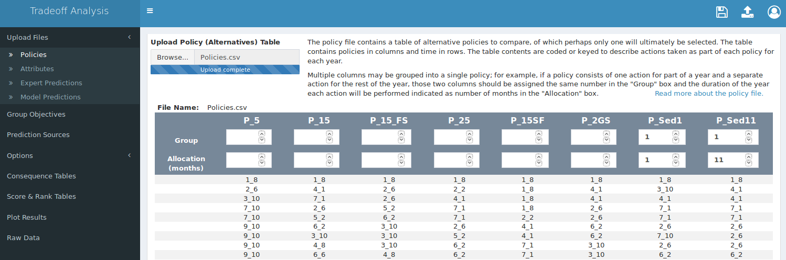
Single vs. Multiple Policy Vectors
In the example policy table in Tables 2 and 3, all policies are coded as “single policy vectors”, which means that each policy consists of a single action per year for one or more years. It is conceivable that a policy may be more complex than this — a policy may consist of multiple actions per year, which can be coded with multiple action codes for each year. We can accomodate this with “multiple policy vectors”, effectively allowing two or more columns in the policy table to specify one policy. For example, instead of opening a gate a fixed amount for the entire year, a gate may be opened halfway for one month and then set to wide-open for the remaining 11 months. In addition to joining multiple columns as a single policy we also need to identify the proportion of the time each action will be applied.
After a policy table is uploaded a table will appear on the page; at the top of the table we can indicate that a single policy will be the result of a combination of the last two columns by assigning them the same number in the “Group” fields, and we can also indicate the time allocated to each action in the “Allocation” fields.

Typically the time allocation numbers indicate months of the year, so the sum of all allocations in a single group should be 12. In practice these values are marginalized before use, so these fields can take any values that adequately summarize the action.
Leaving the “Group” fields blank for the single policy vectors is treated the same as assigning them to unique groups. The settings in the above screenshot are thus equivalent those in the following screenshot.
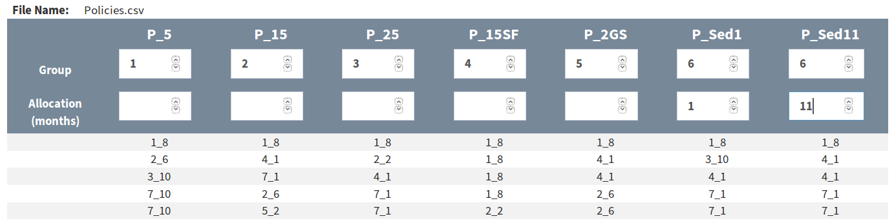
The app currently requires at least one single policy vector and not more than one multiple policy vector in the policy table.
The Attribute Table
In a multiple-criteria decision analysis objectives are often hierarchical. For example, an objective may be to preserve natural hydrography, and for each objective there may be multiple subobjectives, and each of those may even specify additional subobjectives. Our objectives may include the following hierarchy:
The attribute table is where we can specify the hierarchy of objectives, along with additional attributes about the objective – hence the name.
To cut visual clutter when presenting scored objectives, the application can group objectives at two levels. The first is by organizing subobjectives under their parent objective and visually indicating which subobjectives are related. The second is by collapsing multiple subobjectives under a single pseudo-subjobjective and presenting only the pseudo-subobjective for display.
Organizing Subobjectives
In Table 4 the first column, “Obj.lbl”, contains the hierarchy of objectives beginning with the most general level and ending with the most specific objective name. The value in the first column and first row is “Hydrography.Hydroperiod.FloodingFreq”, which represents three levels of objective separated by a single period. It is acceptable for levels of the objective label to contain spaces, but it is important that the most specific subobjectives be unique.
| Obj.lbl | Objective | Model | Prediction | Direction | Distr | Utility |
|---|---|---|---|---|---|---|
| Hydrography.Hydroperiod.FloodingFreq | FloodingFreq | EFDC | Snap | Max | NULL | RiskAdverse |
| Hydrography.Hydroperiod.FloodingDuration | FloodingDuration | EFDC | Snap | Max | NULL | RiskAdverse |
| Hydrography.Marsh Surface Drainage.Ponding | Ponding | EFDC | Snap | Min | NULL | RiskAdverse |
| Ecological Function/Integrity.Area Restored.Salinity | Salinity | EFDC | Snap | Max | NULL | RiskAdverse |
| Ecological Function/Integrity.Area Restored.Vegetation | Vegetation | Elicit | Snap | Max | beta | RiskAdverse |
| Ecological Function/Integrity.Surface WQ.pH | pH | Elicit | Snap | Min | NULL | Linear |
| Ecological Function/Integrity.Surface WQ.DO | DO | Elicit | Snap | Min | NULL | Linear |
| Adverse Impacts.Harbor Shellfish Beds.Fecal | Fecal | Elicit | Snap | Min | beta | RiskSeeking |
| Adverse Impacts.Harbor Shellfish Beds.Sediment | Sediment | Elicit | Snap | Min | beta | RiskSeeking |
| Adverse Impacts.Public Satisfaction.Privacy | Privacy | Elicit | Delta | Min | pois | RiskSeeking |
The second column of the above table, “Objective”, appears to duplicate the most specific subobjective level, but there are cases where the two will deviate. The “Objective” column values are multifunctional. They:
- name the subobjectives as we wish to see them in the output tables and graphics
- share the name of the utility scale the app uses for scoring
- indicate which subobjectives can be collapsed under a pseudo-subobjective
Unlike the most specific subobjective in the “Obj.lbl” column, the “Objective” column values do not need to be unique. By repeating an objective in the “Objective” column we indicate that those objectives may be arbitrarily grouped and collapsed under a pseudo-subobjective. This is desirable for decisions that use the objective hierarchy to evaluate spatially implicit subobjectives.
Spatially Implicit Subobjectives
There will be decisions for which some objectives apply only to specific regions, rather than to the global decision area. For decisions involving land use the regions may be hydrologic subbasins, towns, or any other distinct geographical subset. For non-geographical decisions the terms “region” and “global” can be interpreted metaphorically and remain meaningful.
In Table 5 the subobjective “Salinity” is evaluated in different hydrologic subbasins, but when we compare alternative policies we are not immediately interested in the how each policy scores in the specific subbasins – instead, we are more interested in how each policy scores for salinity measurements across all subbasins. We do this by indicating the region in the most specific component of the objective hierarchy, but apply the same “Salinity” label to all output. The app will recognize the duplication and allow us to manually create arbitrary groups of pseudo-subobjectives that can be collapsed to summarize the score across all subbasins or expanded to inspect the scores in each specific subbasin.
| Obj.lbl | Objective | Model | Prediction | Direction | Distr | Utility |
|---|---|---|---|---|---|---|
| Hydrography.Hydroperiod.FloodingFreq | FloodingFreq | EFDC | Snap | Max | NULL | RiskAdverse |
| Hydrography.Hydroperiod.FloodingDuration | FloodingDuration | EFDC | Snap | Max | NULL | RiskAdverse |
| Hydrography.Marsh Surface Drainage.Ponding | Ponding | EFDC | Snap | Min | NULL | RiskAdverse |
| Ecological Function/Integrity.Area Restored.SalinityMillCreek | Salinity | EFDC | Snap | Max | NULL | RiskAdverse |
| Ecological Function/Integrity.Area Restored.SalinityCheqNeck | Salinity | EFDC | Snap | Max | NULL | RiskAdverse |
| Ecological Function/Integrity.Area Restored.SalinityUpperPoleDike | Salinity | EFDC | Snap | Max | NULL | RiskAdverse |
| Ecological Function/Integrity.Area Restored.SalinityLowerPoleDike | Salinity | EFDC | Snap | Max | NULL | RiskAdverse |
| Ecological Function/Integrity.Area Restored.SalinityBoundBrook | Salinity | EFDC | Snap | Max | NULL | RiskAdverse |
| Ecological Function/Integrity.Area Restored.SalinityDuckHarbor | Salinity | EFDC | Snap | Max | NULL | RiskAdverse |
| Ecological Function/Integrity.Area Restored.Vegetation | Vegetation | Elicit | Snap | Max | beta | RiskAdverse |
| Ecological Function/Integrity.Surface WQ.pH | pH | Elicit | Snap | Min | NULL | Linear |
| Ecological Function/Integrity.Surface WQ.DO | DO | Elicit | Snap | Min | NULL | Linear |
| Ecological Function/Integrity.Habitat Quality Native Estuarine Animals.Invertebrate | Invertebrate | Elicit | Snap | Max | beta | Linear |
| Ecological Function/Integrity.Connectivity Diadronmous Fish.Fish | Fish | Elicit | Snap | Max | pois | Linear |
Related subobjectives will all use the same “Salinity” utility lookup and should share the same model type (for modeled objectives), prediction type and distribution (for elicited objectives), and desired measurement direction and utility-risk characterization.
Attribute Table Columns
The column names in Tables 4 and 5 are default names which the app looks for when the attribute table file is uploaded, but it is possible to use your own names for these same columns. When you upload your attribute table, if the default column names are not found you will be presented with a form that will allow you to specify which of your columns contain the expected values.
| Default Name | Data | Details |
|---|---|---|
| Obj.lbl | Objective hierarchy | First element is most general objective, last is most specific subobjective. Last subobjective must be unique. Used for grouping objectives and subobjectives in output. |
| Objective | Objective name | Can duplicate. Used to label output and look up predictions. |
| Model | Prediction source | Use keyword “Elicit” for expert predictions, use any other keyword for modeled predictions. Match keyword in prediction file name. Used to find predictions for each objective. |
| Prediction | Prediction type | Either “Snap”, “Delta”, or blank. Used to direct interpolation of expert predictions: “Snap” or blank will use the raw predictions, “Delta” will use the cumulative predictions. |
| Direction | Goal | Identifies whether we prefer the smallest measured values (Min) or the largest (Max). |
| Distr | Probability distribution | The distribution to which four-point elicitation values are converted. Must be a valid R distribution with a density function such as: “lnorm”, “norm”, “beta”, “pois”, or “NULL”. NULL will use the MostLikely value with no confidence estimate. |
| Utility | Risk attitude | Five default risk attitudes are built-in: “ExtremeRiskAdverse”, “RiskAdverse”, “Linear”, “RiskSeeking”, and “ExtremeRiskSeeking”. |
Optional Columns
Weighting Subbasins By Area
Default value weights are divided equally among fundamental objectives, then within each fundamental objective the objective weights are divided equally, and within each objective the subobjective weights are divided equally. This default behavior may not be best for all projects. For example, when subobjectives are spatially implicit it may be advantageous to specify a subobjective weight that is proportional to each subobjective-area. This is achieved by using a spreadsheet program to add a column to the attribute table that contains the proportional area for each subobjective (subbasins should sum to 1), then selecting that column as the Subbasin Proportion Column. Subobjectives that are intended to apply to the entire area (i.e. not spatial) should have their weight designated with weight for the full area, which is 1. For these values to be applied correctly the Subbasin Proportion Column must be selected before any Weight Columns are selected as value weights.
Value Weights
Value weights may be included directly in the attribute table. To include weight columns use a spreadsheet program to add one or more columns to your table and populate the column with weights, then select those columns as Weight Columns. It is not necessary to normalize the weights on a 0-1 scale in each column, but be aware that weights in a column are valued relative to all others in the column. This contrasts with how the app presents weights. In the app weights are isolated and specified using a three-tier hierarchy: fundamental objective weights are presented on a 0-1 scale relative to other fundamental objectives, then objective weights are presented on a 0-1 scale relative to other objectives within the same fundamental objective, and finally subobjective weights are presented on a 0-1 scale relative to other subobjectives within the same objective. To value-weight a subobjective score, the product of the objective weight and the subobjective weight is marginalized by dividing by the sum of the weights, and the final weight is then applied to the score. Weights uploaded in the table are similarly marginalized, both for display and before being applied, and some rounding error may accumulate in the process. Weights included in the attribute table are presented in the value-weight editor and may be corrected or altered in the app if desired.
Optional weight columns can use any names that do not overlap with the default names, but spaces will be removed from the names during processing. After you upload a table that contains weight columns you must indicate the name of the column to the app by selecting one or more columns in the “Default Weight Columns” selector.
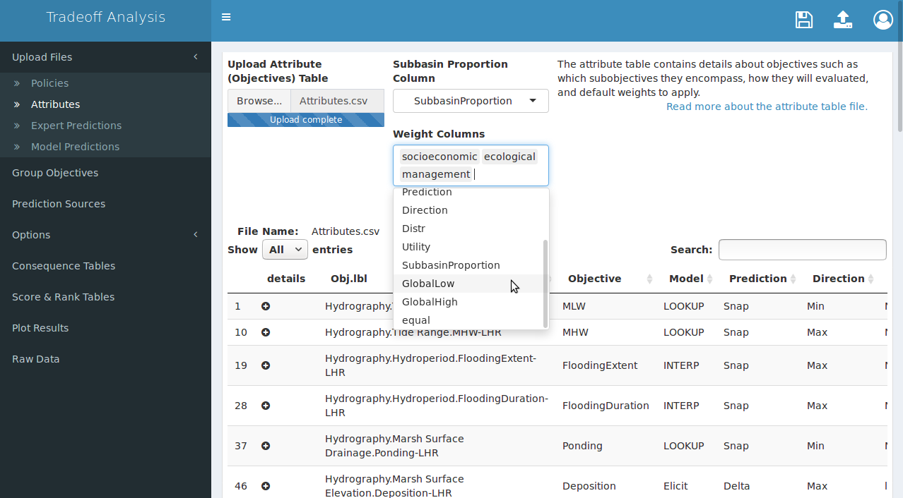
Expert Predictions
In the absence of quantitative models, predictions of future effects of current actions can be obtained through expert elicitation. This app accepts tables summarizing four-point elicitation methods for which experts predict a high value, a low value, a most likely value, and then quantify confidence in their prediction. The expert elicted prediction table contains each of those four values for each objective, policy, and time, listed long-form.
| Objective | Low | High | MostLikely | Confidence | Policy | Time |
|---|---|---|---|---|---|---|
| Accretion | 2 | 15 | 6 | 70 | P_15 | 1 |
| Accretion | 2 | 15 | 6 | 70 | P_15SF | 1 |
| Accretion | 2 | 15 | 6 | 70 | P_25 | 1 |
| Accretion | 2 | 15 | 6 | 70 | P_2GS | 1 |
| Accretion | 2 | 15 | 6 | 70 | P_5 | 1 |
| Accretion | 2 | 15 | 6 | 70 | P_Sed | 1 |
| Accretion | 6 | 24 | 18 | 70 | P_15 | 3 |
| Accretion | 0 | 24 | 18 | 70 | P_15SF | 3 |
| Accretion | 6 | 24 | 18 | 70 | P_25 | 3 |
| Accretion | 0 | 24 | 18 | 70 | P_2GS | 3 |
| Accretion | 18 | 42 | 24 | 70 | P_5 | 3 |
| Accretion | 20 | 57 | 28 | 70 | P_Sed | 3 |
| Accretion | 6 | 24 | 18 | 70 | P_15 | 5 |
| Accretion | 0 | 24 | 18 | 70 | P_15SF | 5 |
| Accretion | 6 | 24 | 18 | 70 | P_25 | 5 |
| Accretion | 6 | 24 | 18 | 70 | P_2GS | 5 |
| Accretion | 18 | 48 | 36 | 70 | P_5 | 5 |
| Accretion | 18 | 36 | 30 | 70 | P_Sed | 5 |
| Accretion | 60 | 120 | 90 | 70 | P_15 | 10 |
Table 7 contains expert predictions for a single objective, “Accretion”, for six policies at years 1, 3, and 5. The elicitation process grows more laborious as the number of objectives, policies, and time points grow larger, so it is assumed the predictions will be for discrete times separated by intervals greater than one. The app will convert the predictions to the probability distribution specified in the attribute table (if not “NULL”), and will fill times between predictions using a linear interpolation algorithm.
Column names in the expert elicitation tables are fixed and case sensitive. The columns should match those in Table 7:
- Objective: must match the most specific level of the objective hierarchy in the attribute table.
- Low: the lowest reasonable predicted value.
- High: the highest reasonable predicted value.
- MostLikely: the most likely predicted value.
- Confidence: estimated confidence that the observed value will fall in the Low-High range.
- Policy: these values take priority over policy column names and are fuzzy-matched to the policy table.
- Time: usually specified as integer years, but units are not critical.
For decisions with only a single prediction time the “Time” column should contain a single value. Confidence values may be on a 0-1 scale or a 0-100 scale; all confidence values will be transformed to a 0-1 scale internally before use.
A decision may rely on predictions from multiple experts for a single objective to obtain “second opinion” distributions, or the objectives may present a broad cross-section of expertise unattainable from a single expert. Any number of expert prediction tables may therefore be uploaded by holding down the “Shift” or “Control” button on the keyboard while using the mouse to select individual files in the file-browser pop-up.
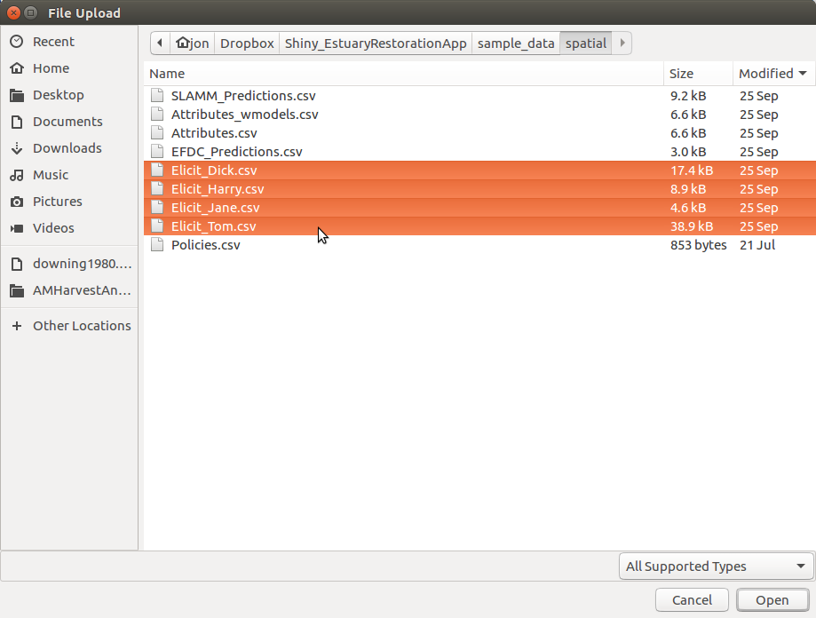
The file names should contain the keyword “Elicit”, as illustrated in the images above and below. This will assist the app to find the correct tables to apply to each subobjective. Immediately after the files have been uploaded the app will attempt to convert all four-point elicitation tables to distributions, and when it is complete the file names are displayed to the right of the uploader in a table with a checked checkbox next to each name. The checkbox permits individual experts to be quickly “knocked out” of the prediction process without re-uploading all of the tables. The knock-out process can help identify experts with more extreme predictions than others, and may be useful during sensitivity analysis.
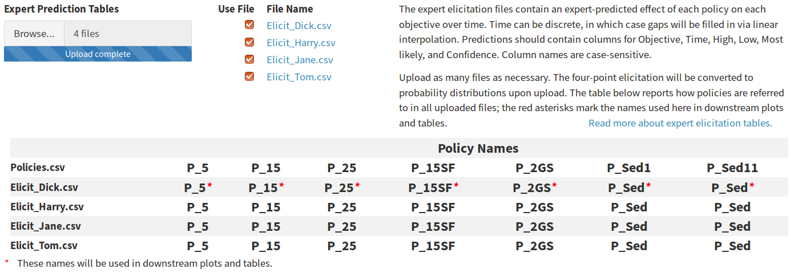
The policy names table lists the column names in the policy table above the unique values from the “Policy” column in each expert prediction table. The first row of expert table policies (row 2 in the table) displays a red asterisk after each policy name. The asterisk indicates that the policy names from this file will be used in all tables and figures; this avoids requiring the user to specify a name for multiple vector policies. In the screenshot above, the two right-most columns are labeled “P_Sed1” and “P_Sed11” in the policy table, but they are a multiple vector policy that will be presented with the name “P_Sed” as labeled in the first expert table and matched using fuzzy-matching.
Model Predictions
There two types of model prediction tables: those that report results as a function of a policy configuration (lookup) and those that report results as a function of time (interpolated). Lookup models assume the action occurs once and the effect remains static for the duration of the decision process (i.e. the number of rows in the policy table), while interpolated models assume the action occurs once but the effect changes over time and must be predicted at multiple time intervals. Both types may be uploaded in a single action by clicking the “Browse” button and holding down “Shift” or “Command” while selecting multiple files. The file names should contain a keyword from the attribute table to assist the app to find the correct table in which to look up predictions.
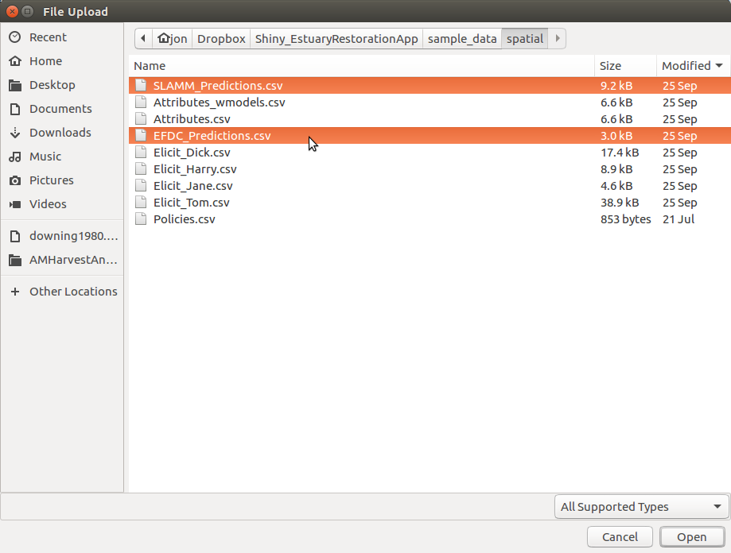
The file names will be displayed as links to the right of the uploader. Clicking a name brings up a modal window that displays the contents of the uploaded file.
The files are automatically sorted into lookup model predictions and interpolated model predictions. The app makes this distinction by first looking for a “Time” column, which is only present in interpolated models. All tables with no “Time” column are then compared to the policy table; if they contain coded actions, they are lookup predictions because the policy actions are reconstructed by pulling codes from the policy file and looking up predictions in the model file. Tables that contain no “Time” column and no coded actions are listed as unrecognizable and are presented on screen with an appropriate error message.
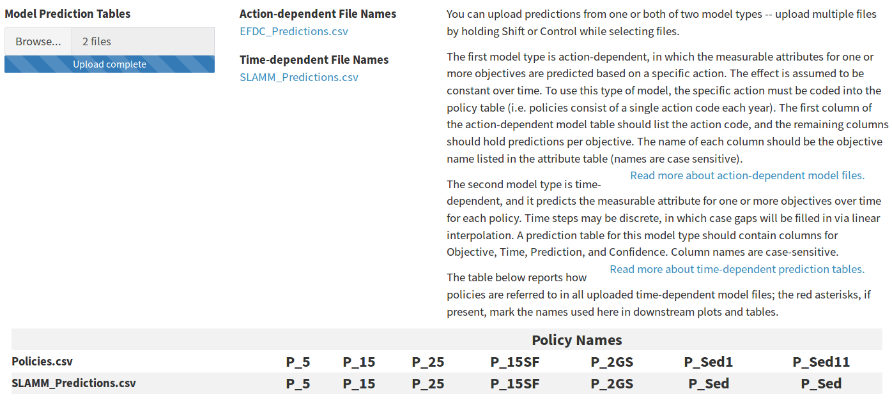
Policy names from all interpolated model prediction tables are added to the table of policy names at the bottom of the screen. If no expert predictions are uploaded, the policy names from the first time dependent model will be used in all tabular and graphical output, as indicated by a red asterisk. When expert predictions are uploaded those policy names will take precedent over names supplied in the model files.
Lookup Predictions
In the lookup model predict tables the coded value in the policy table should appear in the first column of the lookup model table; this column may take any name. All subobjectives for which an effect is predicted should occur in subsequent columns, with the predicted effect of each action listed in the appropriate row. The units of each predicted effect should remain constant in each column but may differ between columns. The column names of the subobjective columns must exactly match the subobjective name listed as the most specific level of the objective hierarchy in the attribute table.
| Gate | FloodingDuration | FloodingFreq | MHW | MLW | Ponding |
|---|---|---|---|---|---|
| 1_1 | 0.0000000 | 0.0000000 | -0.96 | -2.87 | 2.91 |
| 1_2 | 0.1292757 | 0.1147842 | -0.27 | -2.56 | 2.93 |
| 1_8 | 1.0822903 | 7.9660239 | 0.37 | -2.08 | 9.20 |
| 2_1 | 0.5042157 | 0.8034894 | -0.27 | -2.71 | 2.81 |
| 2_2 | 1.2972008 | 11.4554637 | 0.59 | -2.52 | 2.99 |
| 2_6 | 2.3139933 | 32.5528007 | 1.81 | -1.88 | 10.80 |
| 3_10 | 2.8096489 | 43.3884298 | 2.51 | -2.16 | 14.20 |
| 4_1 | 1.4007621 | 11.5702479 | 0.60 | -2.68 | 2.94 |
| 4_6 | 3.1733312 | 56.6115702 | 2.76 | -2.46 | 12.87 |
| 4_8 | 3.2150928 | 58.9990817 | 2.94 | -2.40 | 17.09 |
| 5_2 | 2.7458039 | 40.7943067 | 1.95 | -2.75 | 3.57 |
| 5_6 | 3.2910039 | 62.0293848 | 3.03 | -2.61 | 14.58 |
| 6_2 | 2.8095904 | 43.1818182 | 2.19 | -2.78 | 4.06 |
| 6_6 | 3.3238047 | 63.7741047 | 3.23 | -2.69 | 17.16 |
| 7_1 | 2.3122973 | 29.9586777 | 1.43 | -2.75 | 3.36 |
| 7_10 | 3.1299876 | 53.9485767 | 3.63 | -2.60 | 24.05 |
| 9_10 | 3.4375389 | 85.9963269 | 4.30 | -2.36 | 28.72 |
In the example table above predictions for multiple subobjectives are contained in a single column. It is also possible to upload a separate table for each subobjective, but doing so introduces additional work to specify from which table predictions will be drawn.
Interpolated Predictions
Interpolated model predictions have a structure similar to expert elicited predictions. For each objective, policy, and time interval, a predicted effect and confidence are listed in a long-form table. Like the expert prediction table, the column names of this table are fixed and case-sensitive.
| Objective | Estimate | Confidence | Policy | Time |
|---|---|---|---|---|
| Accretion | 6 | 70 | P_15 | 1 |
| Accretion | 6 | 70 | P_15SF | 1 |
| Accretion | 6 | 70 | P_25 | 1 |
| Accretion | 6 | 70 | P_2GS | 1 |
| Accretion | 6 | 70 | P_5 | 1 |
| Accretion | 6 | 70 | P_Sed | 1 |
| Accretion | 18 | 70 | P_15 | 3 |
| Accretion | 18 | 70 | P_15SF | 3 |
| Accretion | 18 | 70 | P_25 | 3 |
| Accretion | 18 | 70 | P_2GS | 3 |
| Accretion | 24 | 70 | P_5 | 3 |
| Accretion | 28 | 70 | P_Sed | 3 |
| Accretion | 18 | 70 | P_15 | 5 |
| Accretion | 18 | 70 | P_15SF | 5 |
| Accretion | 18 | 70 | P_25 | 5 |
| Accretion | 18 | 70 | P_2GS | 5 |
| Accretion | 36 | 70 | P_5 | 5 |
| Accretion | 30 | 70 | P_Sed | 5 |
The “Time” column should contain discrete integers separated by intervals of 1 or greater than 1. Intervals greater than 1 will be filled in using a linear interpolation algorithm.
Grouping Subobjectives
To cut visual clutter when presenting scored objectives, the application can collapse multiple subobjectives under a single pseudo-subjobjective and present only the pseudo-subobjective for display. Some of set-up to determine which subobjectives can be collapsed is done in the attribute table: subobjectives are given unique names in the hierarchy column, but can be given non-unique names in the objective column. Subobjectives that share a name in the objective column are candidates for grouping. The groups are arbitrarily designated by the user within the grids of radio buttons presented in the “Group Objectives” tab. Within a single objective-row, a grid of radio buttons contains as many numbered groups as members of that group. The default arrangement assigns each subobjective to a unique group, which means the final score for each subobjective will be presented in all output. By assigning multiple subobjectives to the same group number results for the group will be collapsed in all output, and a weighted average of the scores will be presented with a pseudo-subobjective. Groups are assigned per objective-row; group 1 for any objective will be assigned membership independently of all other objectives.
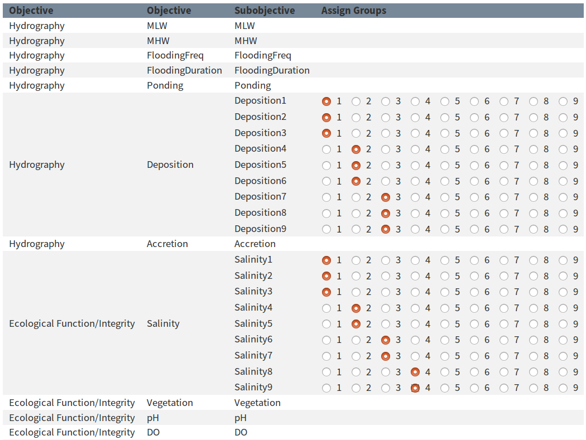
In the consequence table, the grouped subobjectives will appear with the objective name and the suffix “_groupX“, where X is the assigned number.
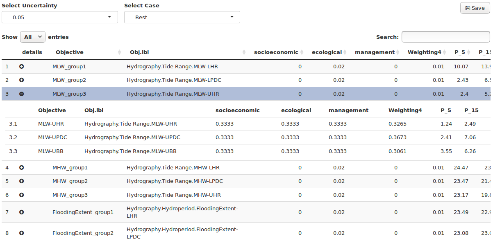
Specify Prediction Sources
The app requires the user to verify the source of predictions for each subobjective before utility can be scored. This is for three reasons: first, the prediction source is specified in the “model” column of the attribute table with a keyword (e.g. INTERP, LOOKUP, or ELICIT) and then matched to a file containing that keyword, and the matching should be checked for errors. Blanks in the prediction sources table are usually caused by missing prediction files, and can be rectified by uploading the correct file or verifying the correct keyword is present in both the attribute table and the file name. Second, it is expected that predictions may initially be elicited from experts but as models are created or adapted the prediction source will shift from elicited to modeled. This is accomplished by adding the predictions to the proper table, then using a spreadsheet program to change the keyword in the attribute table. The prediction sources table should then be reviewed to verify that the sources are up to date with the latest predictions. Third, the prediction sources table can be used to isolate predictions from a single expert for each subobjective.
The default bahavior in the prediction sources table is to match keywords for all model files and merge all expert elicitation files. The selector for expert elicited attributes will initially read “Merge Experts” whenever more than one expert prediction table is uploaded. This means that expert predictions will be merged whenever possible, and will be left alone wherever merging is not possible. Merging is done by averaging the elicited parameters, computing the distribution mean, and then recalculating variance using an unbiased variance estimator.
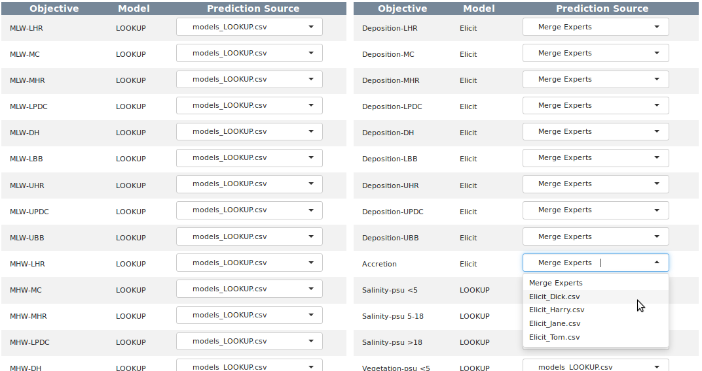
Adjust Utility
Defining Utility
Objectives can all be quantified in some way, usually by measuring some physical attribute. For example, mean high water (MHW) level and dissolved oxygen (DO) exceedances are both objectives; MHW level is measured in feet, and DO exceedances is measured as the number of samples with a DO less than 5mg/L. It is impossible to compare how well a program of action satisfies both the MHW objective and the DO objective in their native units because there is no natural scale upon which the water level and the dissolved oxygen concentration can ever be equal. To accomplish this comparison we must create an artificial scale, which we refer to as the utility scale.
The utility scale always scores the most undesirable measurement as 0 and the most desirable measurement as a 1, regardless of the native units of measurement. In order to apply this scale we need to define in advance what constitutes desirable. For some objectives we may desire the highest measurements, while for others we want the lowest measurements. The desirable direction is our measurement goal, and there is often a point at which we can say we have adequately met our goal.
In addition to recording in advance our goal direction we must also quantify our risk attitude. Risk attitude is harder to intuit than direction because it exists on a subjective gradient that must be characterized by carefully considering how various outcomes affect our level of satisfaction. Thinking of risk attitude in terms of satisfaction is a good way to conceptualize terms like “risk seeking” and “risk adverse”, which describe how quickly we transition from a utility of 0 to a utility of 1. To identify our risk attitude we need to examine whether our satisfaction grows at a constant rate with increasingly satisfying measurements (which would be a “linear” risk attitude) or whether small initial changes are more satisfying than large changes later on (which could be a “risk seeking” attitude), or even the opposite case in which we are not happy with small initial changes and are only happy with large changes later on (“risk adverse”). For example, if 1 DO exceedance makes us twice as happy as 2 exceedances, and 2 makes us twice as happy as 4, we could characterize our attitude as “linear”. If 2 exceedances makes us 4 times as happy as 4 exceedances we might be “risk adverse”.
Risk attitude is a difficult concept to comprehend, and describing it simply as satisfaction leaves us prone to misinterpretation as we attempt to visualize converting measured values to utility. A more complex definition of risk attitude is useful because it can impart a more complex understanding of the concept.
The game theory description of risk attitude has us imagine a magic lottery for a single attribute, such as DO exceedances. Suppose we measure 2 DO exceedances, which is less desirable than 0 exceedances. Now enters our imaginary magic lottery, in which winning allows us to erase those two exceedances. As with any lottery buying a ticket does not guarantee that we will win; instead, the probability of winning is offset by the probability of losing. Now we ask ourselves: how certain must we be of winning (and erasing those 2 exceedances) before we are willing to buy a ticket? If we are willing to play even when our odds of winning are low we consider ourselves “risk seeking”. If we play only when we are fairly certain of a win we consider ourselves “risk adverse”.
Risk And Utility In The App
The utility editor allows the utility function for each subobjective to be parameterized within the app. The two parameters of the utility function include the risk attitude (e.g. “riskSeeking” vs “riskAdverse”) and goal (minimize vs maximize measured values). The default values for these parameters are set in the attribute table using the columns “Utility” and “Direction”.
| Risk Attitude | Risk Value |
|---|---|
| ExtremeRiskAdverse | -1.0 |
| RiskAdverse | -0.3 |
| Linear | 0.0 |
| RiskSeeking | 0.3 |
| ExtremeRiskSeeking | 1.0 |
The utility editor uses a slider below the plot to set the risk value continuously from -1 to +1, but in most cases the slider offers more granularity than necessary. To permanently change the risk in the attribute table use a spreadsheet editor to change the values in the table to one of the following five attitude keywords. The slider and the goal checkbox are disabled until the “Use default utility” checkbox is unchecked. To return to the default value at any time after editing check this box and the value from the attribute table will be applied.
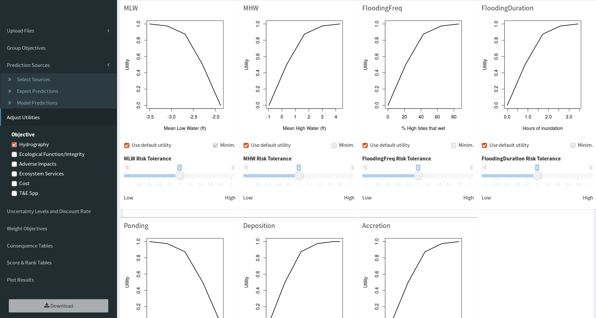
The response direction is reversed by checking or unchecking the “Minim.” box. When checked the goal is set to minimize, which means lower measured values will yield higher utility. When unchecked the goal is set to maximize and higher measured values will yield higer utility.
Discounting The Future
Sensitivity Analysis
Sensitivity analysis offers the opportunity to explore how the outcome may change under slightly different predictions. When small changes to a prediction yields a large change in the outcome, the decision is said to be sensitive to that subobjective. This app allows users to isolate individual subobjectives and quickly recalculate the outcome, which makes it easy to identify those that exhibit disproportional influence in the decision process and those which are robust to changes.
There are two ways to dissect which subobjectives are susceptible to changes in predictions and which have a disproportional influence in the decision process. The first uses the expert predicted range and uncertainty values; the second uses value weighting to emphasize select subobjectives over others.
Evaluating Expert Uncertainty
Only the predictions that are elicited from experts can be used to estimate a range of possible outcomes. Although it is possible to offer the same range for model predictions, the models currently in use for this project only report a point estimate, they do not report a range or a confidence value.
Expert predictions come in with four values: low, most likely, high, and confidence. These four values allow a distribution to be constructed which is used to estimate the outcome in alternative cases, including worst, best, and most likely scenarios. These case scenarios are designed to offer best estimates of realistic boundaries for the final outcome assuming for the worst case that all subobjectives are affected as negatively as they could be, or for the best case that all subobjectives are affected as positively as they could be. During the elicitation process each expert may also indicate how confident they are that the value will fall within their predicted range. The confidence estimate is reflected in the “Alpha” (or \(\alpha\)) column, which is alpha as applied to a two-tailed hypothesis test. In a two-tailed hypothesis test, the confident interval is defined as \(\left\{\frac{alpha}{2}, 1-\frac{alpha}{2}\right\}\). The app allows us to explore how sensitive our scores are to changes in expert confidence by computing scores at various alpha values not selected by the expert but selected instead on the Options > Uncertainty and Discount tab. Since most users will be more familiar with the general concept of uncertainty than the concept of alpha in two-tailed hypothesis testing, the app allows the user to set a range of uncertainty rather than setting alpha directly. Uncertainty and alpha are related in that maximum uncertainty occurs at a probability of 0.5, which is an alpha of 1. The relationship between uncertainty and alpha is \(uncertainty = alpha-0.5\).
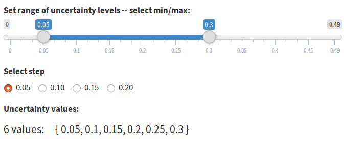
Value Weighting Objectives
The app allows specifying as many as three nested objective hierarchy levels in the attribute table. Weights for each level and each objective are specified independently. In the example below, there are six fundamental objectives. For the first fundamental objective (Hydrography), seven objectives are listed. For the first objective (MLW), nine subobjectives are listed. The remaining fundamental objectives are not shown, nor are the subobjectives for the remaining listed objectives.
At the top of the application page for editing weights is a box for specifying the number of weight scenarios to include in the output. For each weight scenario you can add a custom name (spaces will be removed). Weights intialized within the app will be assigned a default name of “WeightingX”.
All values in the boxes beneath each weighting name can be edited. The default behavior is to weight each objective at each level equally and set the sum of all weights to 1. You can assign weights using any value; for example, you may use integers (e.g. 1, 2, 3) to set weights in which a weight of 2 indicates valuation twice as high as a weight of 1. To rescale the weights so they sum to 1 you can click the “Norm” button at the top of the column, and to reset the weights to the default of equal you can click the “Reset” button. In the column contents you can click the editing pencil icon to the left of each editing box to edit the next nested set of objectives. The pencil icon will appear regardless of whether nested objectives exist. In cases where only one objective level exists the same objective name will be repeated on the popup. It is not an error to change the weight for a single objective in a popup; however, because each nested level of weights are evaluated in isolation the weight will always be scaled to a value of 1 at all levels for which competing objectives are absent. The final weights are calculated in the app by normalizing all weights for each objective and eacy hierarchy level to sum to 1, then multiplying through the objectives and levels.
When uploading weights in the attribute table weights should be specified relative to all subobjectives, so the entire weight column would sum to 1 in a spreadsheet program. The app will normalize the weights internally regardless of whether they already sum to 1 when uploaded.
If you assign weights in the app and wish to attach them to your attribute table you can do so in the “Raw Outputs” tab.
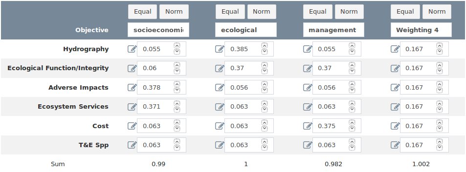
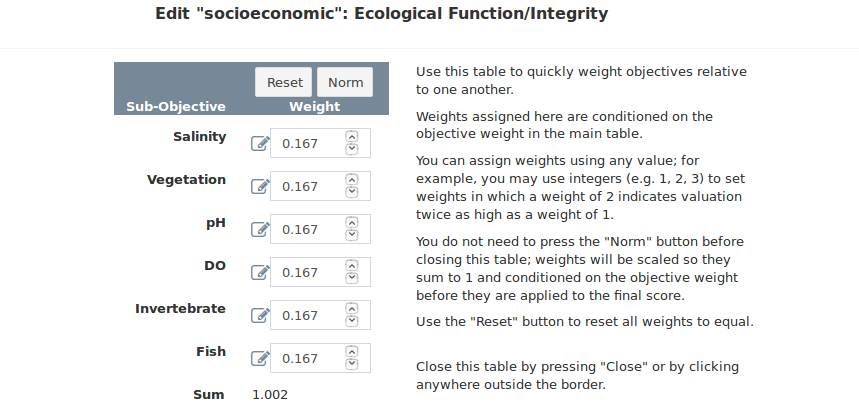
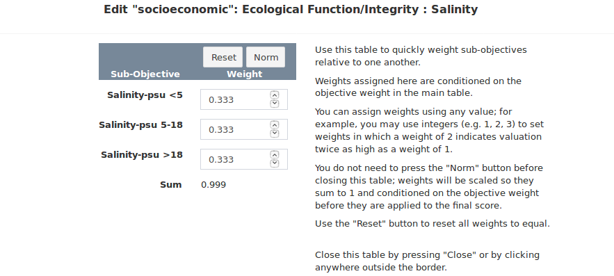
Exploring Results
The utility scores produced by the app are presented in a variety of tables and figures. The goal is to offer a series of diverse cross-sections through the predicted utilities, some of which can be used to simply convey the resulting utility and some of which can highlight strengths and weaknesses of policies relative to one another to optimize management decisions.
Throughout the application the utilities are displayed in a consistent format: anywhere the subobjectives are listed individually the utility scores are discounted but not weighted, and anywhere the utility scores are listed in aggregate they are both weighted and discounted. There is one exception to this pattern: it is an option to view weighted and discounted individual subobjective utilities in the Options > Preview Utilities menu.
The Consequence Table
This table lists all subobjective groups and the predicted utility for each policy at the end of the duration of the policy table. Each subobjective can score anywhere from 0 (worst) to 1 (best) in each policy each time step. If a subobjective achieves full utility in each time step, the resulting total utility will be equal to the number of time steps in the policy table. The range of scores in the consequence table is therefore between 0 and the number of rows in the policy table. The weights are listed for reference between the subobjective name and the policy utiity, but they are not applied to the predicted utility values.
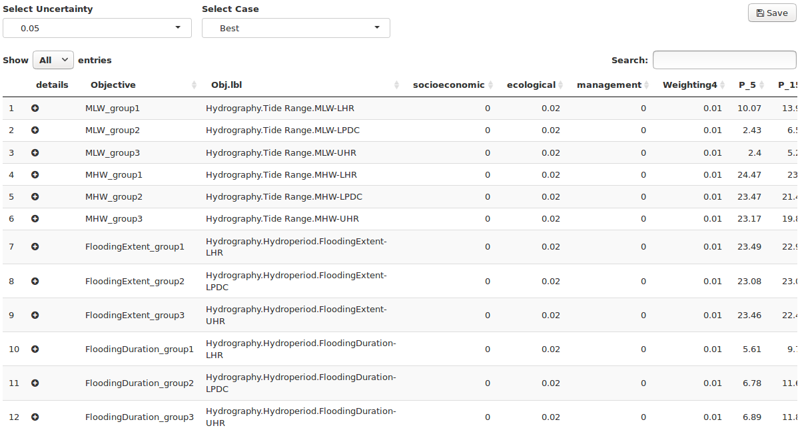
To the left of each subobjective name is a circular button. The button is blank by default, but where multiple subobjectives are grouped under a single objective the button is filled in with a + icon, and the utility displayed in the row is the average utility for the group. Clicking this button expands the row and shows a subtable, in which the exact utility for each subobjective can be looked up.
Score Table
The application is designed to distill the predicted effects of each policy on each subobjective to a single utility score which can be compared across policies. In addition to the single score per policy additional information are brought into the final score table, including multiple value weighting schemes and a number of estimates useful for determining the sensitivity of the process to expert opinion.
The score table lists the final utility for each policy at the final time in the policy table. The scores for each policy listed in columns much like the consequence table, but all subobjective scores are summed at each time step. The sum of scores for each year is then scaled to range between 0 and 1 and the scores are summed across time steps. The scores therefore range between 0 and the number of rows in the policy table. On the right side of the table the last four columns are “Case”, “Alpha”, “Wt”, and “Uncertainty”. These columns list the parameters of scores calculated with the range of expert opinions provided by each expert during elicitation. For each weighting scheme, a score is computed for each uncertainty value in the best and worst case scenarios.
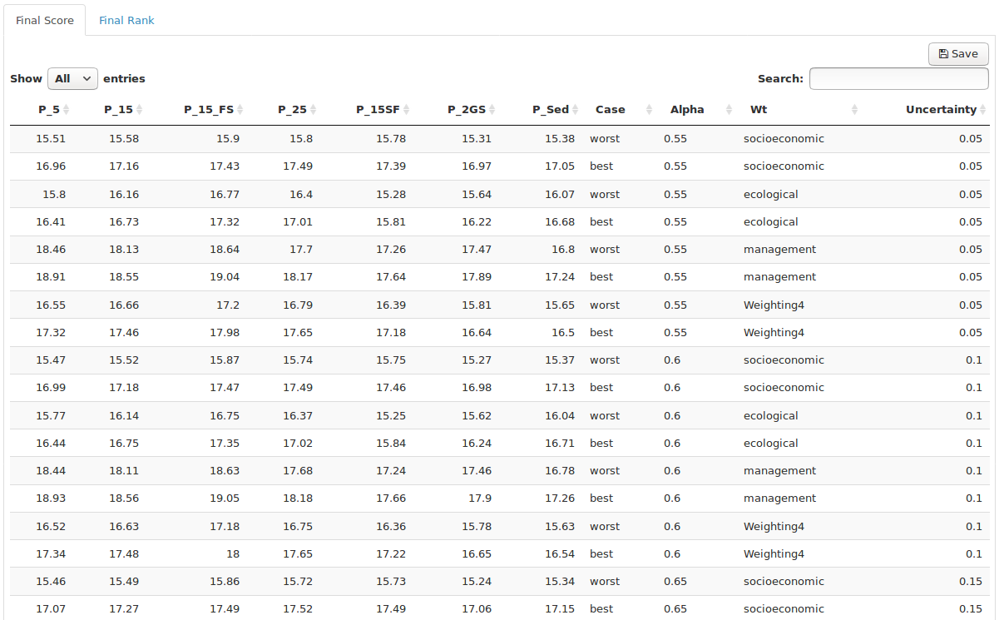
Rank Table
Once the scores for each policy have been computed for each weighting scheme, case and uncertainty level, the simplest way to compare policies is to rank the policies by score from highest to lowest. The rank table does exactly this, allowing you to quickly identify which policy had the highest score (and hence the lowest rank) while also displaying whether changes in weighting scheme or expert uncertainty affected the rank. The score table are the rank table are accessible as tabs across the top of the page.
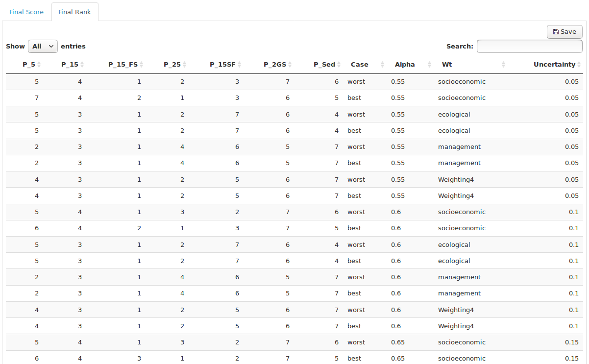
Plotting
The plot options are depicted as tiles in the Plot Results tab. The plots preserve the app format wherein anywhere the subobjectives are listed individually the utility scores are discounted but not weighted, and anywhere the utility scores are listed in aggregate they are both weighted and discounted.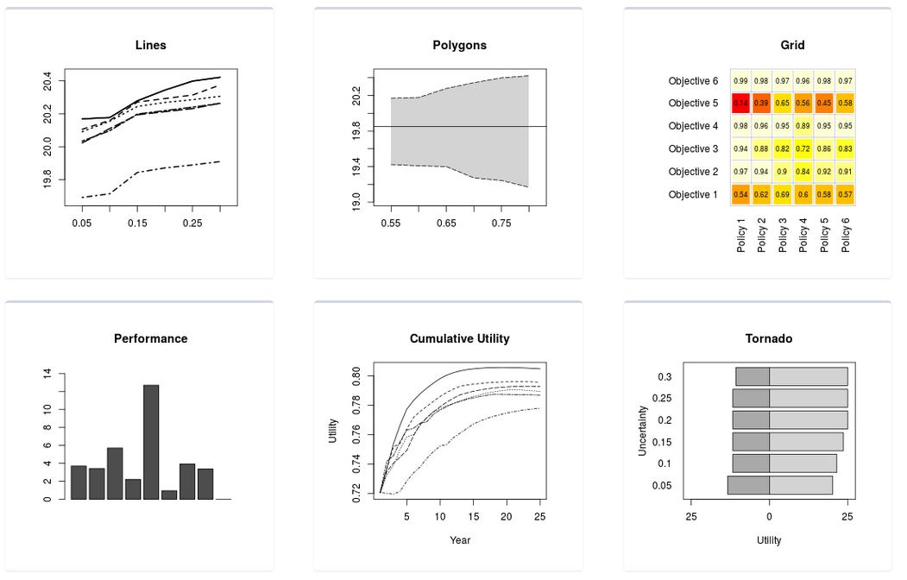
Each tile is a button that launches a plot builder. The plot builder typically offers a handful of parameters that can be customized about each plot, including the plot and axis titles. At the top-right of the plot builder are buttons that allow users to save either the plot image (as a PNG file) or the data behind the plot (as a CSV file). It is not necessary to specify the file extension in the name of each download. When the image is saved the resolution and font-size can be specified to shape the plot the intended use. To close the plot builder click anywhere around it, or scroll to the bottom and click the close button.
The performance plot is designed to help evaluate whether the range of policies offers an adequate set of choices from which an optimal path forward can be selected. The plot consists of two barplots: the upper one grows up from the zero line and the bottom one grows down from the zero line. The X-axis lists each subobjective group, and the Y-axis is cumulative utility both above the zero line and below it.

The title of the upper barplot defaults to Range Across Policies, and it displays the score spread between the best-performing and worst-performing policy for each subobjective group as a dark bar. If all policies score similarly for a subobjective the bar will be small, and if the bar is large it indicates that the policies are not equally addressing that subobjective. Click on a bar of interest to identify the highest scoring policy and lowest scoring policy.
The title of the lower barplot defaults to Unmet Potential, Best Policy, and it displays how many utility points the best-scoring policy stopped shy of the maximum as a light bar. If the best policy reached the maximum possible score the bar will be small, and if the bar is large it indicates that none of the policies are satisfying that subobjective. Click on a bar of interest to identify which was the best policy.
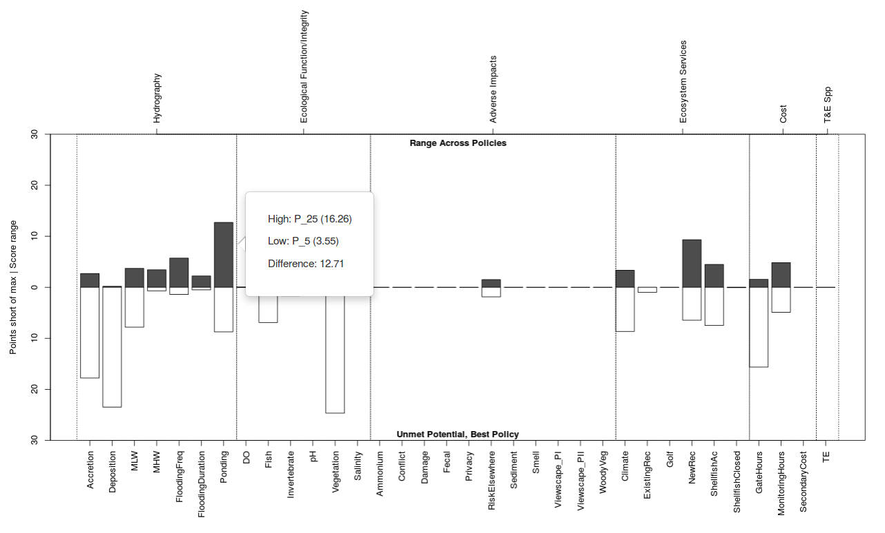
There are four extreme cases to watch for. In the first case there will be no dark top bar and no light bottom bar, indicating that all policies performed equally well. In the second case the dark top bar will be small and the light bottom bar will be tall, indicating that all policies performed poorly. In the third case the dark top bar will be tall and the light bottom bar will be small, indicating that at least one policy performed very well and at least one performed poorly. In the last case both the dark top bar and the light bottom bar will be roughly half-height, indicating that at least one policy performed poorly but no policy’s performance was fantastic.
The cumulative utility plot can be configured to display either the score-to-date at each time step (annual accrual) or the average score for all subobjectives at each time step. The line type and Y-axis remain static as policies are selected and deseleced at the top-left.
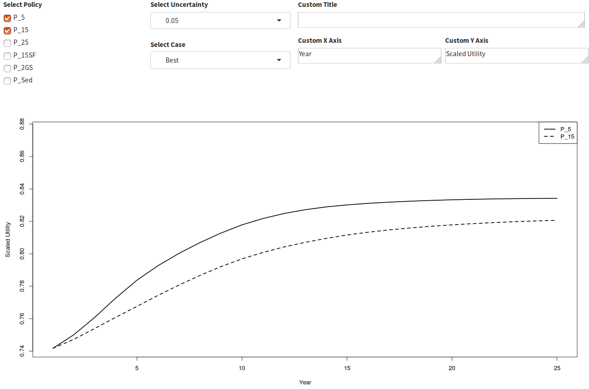
Saving Output
An important feature of any long-term decision is the ability to recall the reasoning behind all decisions, no matter how long ago they were made. The tradeoff app offers two mechanisms for this purpose. The first is the option to document decisions with downloadable tables and figures. The second is the option to download the entire analysis in a compressed file and restore all settings to the saved values at any time in the future. The compressed file is saved using the R data serialization format which will use the RDS extension.
To download the entire analysis use the button with the disk icon in the upper right corner. All screen inputs are saved in their current state. Inputs that have not yet been created are not stored, or are stored with empty values and will revert to default values when the analysis is restored.
Restoring A Saved Analysis
To restore a saved analysis use the button with the upload from disk icon in the upper right corner and select the RDS file you wish to upload. The RDS file contains all raw data and screen control values, and the app will behave as if you had just uploaded the raw data files and it will recompute all downstream products using the restored screen values.